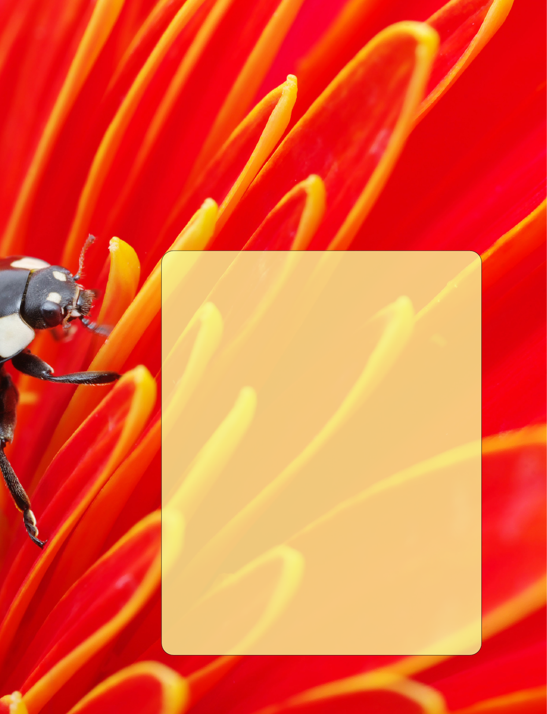
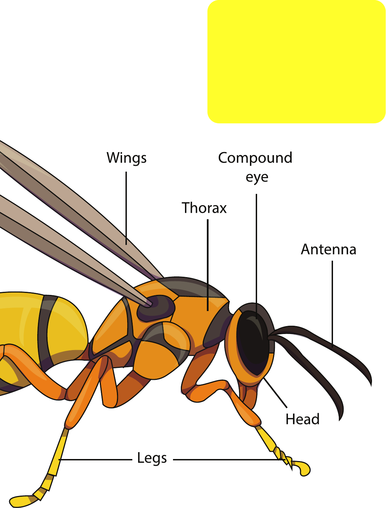

22
© Atlantic Europe Publishing 2019. ISBN 978-1-78278-874-4 Digital only Author: B J Knapp; All
pictures from Earthscape and Shutterstock picture collections unless otherwise credited. No
unauthorised copying or distribution permitted.
Bookworm
challenge
Can you find the answers to these questions?
1. Why is a spider not an insect? (Page 7)
2. What are the main groups of insects? (Page 8)
3. What is the next stage after hatching an egg?
(Page 16)
4. What is a young dragonfly called? (Page 19)
5. What are the names of different kinds of social
insects? (Page 26)
Answers at the back of the book

33
4. Quick facts
6. What are insects?
8. How many groups of insects are there?
10. When were the first insects?
12. Insects are food
14. Insects moult
16. Insects hatch from eggs
18. Insect life cycle (1)
20. Insect life cycle (2)
22. Insects conquer the world
24. Why aren’t insects huge?
26. Do insects live alone?
28. Protecting themselves
30. The good insects do
Contents
Bee
44
Quick facts
An insect has three pairs of legs and a
body divided into three parts. These parts
are called the head, thorax and abdomen.
On the head are a pair of feelers called
antennae. Most insects have a pair of eyes
made of hundreds of small eyes stuck
together in a dome shape. The insect sees
by building a picture from each small eye.
The middle part of the body is called the
thorax. The middle part of the body is full
of muscles to work the wings.
Stag beetle.
Notice one
pair of wings
has become
a pair of
wing cases in
beetles.
55
On the underside are three pairs of
legs. On the upper side there may be one
or two pairs of wings. Flies and midges
have one pair of wings. Bees, butterflies,
beetles and dragonflies have two pairs.
One pair of beetle wings is a hard case.
The back end of the body is called the
abdomen. It holds most of an insect’s
guts - and sometimes a sting in its tail.
66
Insects are six-legged animals with a
hard armour-like skeleton. Insects have
a three-part body (head, thorax and
abdomen). Insects also have compound
eyes and one pair of antennae.
The word insect comes from the Latin
meaning ‘to cut up’. This is because they
have such narrow ‘waists’ between the
head and thorax and the abdomen.
The term insect applies to ten million
species. Insects also make up over
ninety percent of all animals on Earth.
What are insects?

77
These are not insects...!
Spiders, and a few other insect-looking
animals, such as millipedes, are not
insects, because they have a different
number of legs. Spiders, for example,
have eight legs. Some insect-looking
animals – like shrimps – live in the
oceans, but these are not insects either.
They are called crustaceans.
Fly. Just one pair of wings.
Butterfly. Two large, colourful
sets of wings.
88
How many groups of
insects are there?
There are many main groups of insects: beetles
(over 40% of all insects), flies, moths/butterflies
and wasps/bees.
Ladybird beetle. One pair of
wings make wing cases.
Bee. Two pairs of wings that hook
together and look like one pair.
99
1010
When were the first insects?
The first insects date back 400 million years, and they
had wings 300 million years ago. Fossil insects are often
found preserved in amber (shown here).
Insects and flowering plants developed together. For
millions of years they have depended on one another.
1111
1212
This food chain
uses the insect:
grasshopper. Can
you make up
another food chain
that includes an
insect.
Insects are food
Insects have to feed. Some of
them are carnivorous, they feed
on other insects, but others feed
on sap, leaves, fruit and wood.
This is when they can become a
problem for people. A few also
carry diseases.
A wide range of insects – not
just bees – carry pollen between
flowers. Flowering plants will only
live as long as there are insects to
pollinate them.
Insects make up a large
amount of all animals. They are
an important food for many larger
animals. They are an important
part of many food chains. We
depend on insects just as much as
wild animals.
Bird
1313
A food chain.
Snake
Rodent
Insect
Plant
1414
Insects moult
Insects all have a ‘coat of
armour’ for their skeleton. All
of their muscles are attached
to its case, not to anything
inside. They do not have inside
skeletons like us.
As they grow, their stiff
skeleton becomes too tight, and
they have to moult it off and
grow a new one.
The skeleton of an insect
is a very thin case. The main
component of its skeleton is
chitin.

1515
1616
Insects hatch from eggs
Most insects lay eggs and then leave the eggs to
hatch without any help from the adult. When the
eggs hatch, the little grubs have to find their own
food.
With social insects like ants and bees, the eggs
hatch in special nurseries. Food is brought to them,
and they never go outside until they change into
adults.
How eggs change to larvae inside a beehive.
1717
Monarch butterfly eggs on
the underside of a leaf, and a
caterpillar hatching from an
egg. The leaf is its food.
1818
Insect life cycle (1)
All insects must change from one form to another
during their lives.
There are two ways they can do this. On this page
you see what happens with insects like dragonflies. On
the next page you see the other way.
Some insect larvae look a bit like the adults but
without wings. Dragonflies are like this.
Dragonflies live entirely underwater while they are
growing. But from time to time they grow too big for
their skins, and moult. Young insects that are still going
through this stage are called nymphs.
Each time they moult they look more and more like
adults.
Finally they crawl out of the water and moult for the
last time, growing wings and flying away.
Dragonfly laying eggs.
Egg
Nymph
Final moult
Adult
Life cycle of a dragonfly
1919
2020
Insect life cycle (2)
Most insect larvae look nothing like
their adults. Caterpillars, maggots
and grubs are good examples.
As a result, the insect larva has a
lot of work to do to change in one go.
There are four stages to this kind of
change:
1. egg
2. larva (caterpillar, maggot etc)
3. pupa
4. adult
An egg hatches to produce a larva,
which is generally grub-like. The larva
grows, perhaps over several years.
Then the time comes for it to change
to an adult. It suddenly becomes
still and forms a hardened case, for
example a silkworm spins a cocoon.
At this time the larva grows wings
and legs. Then, when all has changed,
it splits open the cocoon and comes
out as an adult.
Flies, butterflies and moths and
bees, wasps and ants all have a life
cycle like this.
The growing stages
usually last very much
longer than the grown-
up stage. For example, a
may bug spends 3 years
growing. Once grown it
spends just a few days as
an adult before it dies.
This short adult life is just
long enough to lay eggs
for the next generation.
Larva (caterpillar)
Pupa (chrysalis)
Adult
Eggs
2121
Life cycle of a monarch butterfly
Wikipedia
2222
Most insect eggs can survive being dried out. Larvae
and adult insects can live through cold and dry
conditions.
In a few cases, such as the cockroaches, aphids
(shown here) and tsetse flies, the eggs grow entirely
inside the female, and then hatch immediately upon
being laid, or are even born alive.
Some insects migrate to a warmer climate, while
others ‘hibernate’.
Insects conquer the world
2323
2424
Why aren’t insects huge?
Insects do not use blood to carry oxygen about
the body. They have no veins and arteries. They
are generally very small. Instead they take in air
through openings in the sides of the body. These are
connected to tubes that take oxygen to where it is
needed directly.
This simple way of getting oxygen is no use when
you get large.This is why the heaviest insect weighs
less than 100g.
2525
The atlas moth is one of the world’s largest insects.
Size depends on how much oxygen is in
the air. In the past, from time to time
there was very much more oxygen in
the air. This is what allowed ancient
dragonflies to grow to have wingspans
of about 1 meter.
2626
Most insects live alone. Only a few live as
groups. The most famous of these are bees,
wasps, termites and ants. These are called
‘social insects’. They tend to live in nests, with
different insect types doing different jobs. It
is these social insects that have ‘queens’ that
do all the egg laying, workers that bring food
and look after the young, and soldiers that
guard the nest.
Do insects live alone?
Leafcutter ants taking food back for the
fungi gardens they keep underground.
Termite mound
made by white ants
(termites) to help get
fresh air into the nest
which is underground.
Bees making a natural
beehive.

2727
2828
Insects have to protect themselves. Some do
this by having ways of stinging (bees/wasps)
or shooting out acids (ants). Others do it
by mimicking another poisonous or stinging
insect. The viceroy butterfly (top) appears
very similar to the bad-tasting monarch
butterfly (bottom).
Insects are mostly defenseless. Most use
camouflage, having patterns like the surface
they rest on. Oak-leaf butterfly use this
method. Some, like stick insects, look like
dead twigs. Feeding at night, living in the
soil or in wood, and hiding by day are other
methods widely used.
Protecting themselves
weevil larva inside a tree
trunk
oak-leaf butterfly looking
like a dead leaf.
2929
stick insect
A ground beetle
3030
Insects play one of the most important
roles of any living thing in their
environment. They have many roles, such
as soil turning and getting air into the soil
(which is needed by plant roots and for
rotting).
Insects bury dung, drag dead leaves into
the soil to make humus. Both of these bring
nourishment into the soil for plants.
Many insects, and not just bees, are vital
for pollination of flowers.
Some beetles are scavengers that feed
on dead animals and fallen trees. They
chew up dead material and release what
they don’t need as waste matter. What
leaves a beetle dissolves in water and so is
much more useful to plant roots. Beetles
(as well as worms) are responsible for
making the topsoil that grows our food.
The good insects do
Other Soil
Animal
A ground beetle
3131
3232
Bookworm
challenge
Here are the answers
1. Why is a spider not an insect? (Page 7) Because it has
8 legs not 6
2. What are the main groups of insects? (Page 8) Beetles,
flies, wasps/bees and moths/butterflies
3. What is the next stage after hatching an egg? (Page
16) A larva
4. What is a young dragonfly called? (Page 19) Nymph
5. What are the names of different kinds of social
insects? (Page 26) Ants, termites, wasps, bees
And finally:
This is a dung beetle hard at work. In nature nothing goes to
waste and everything is recycled. If only we did the same...
3333